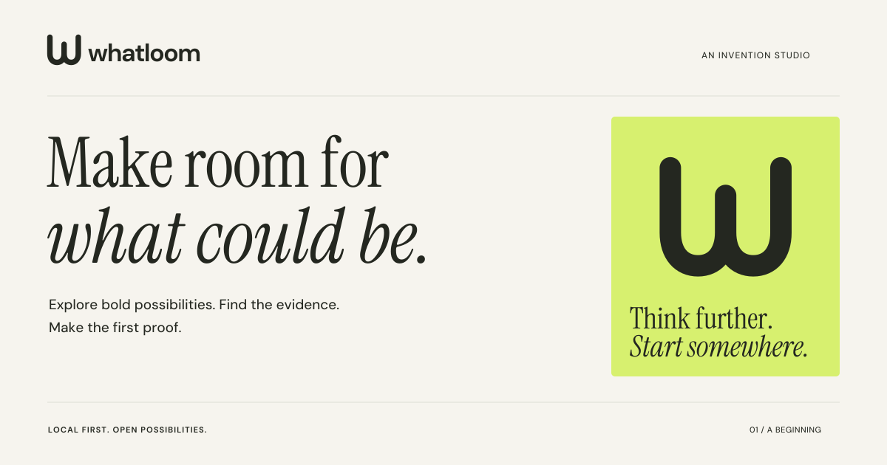
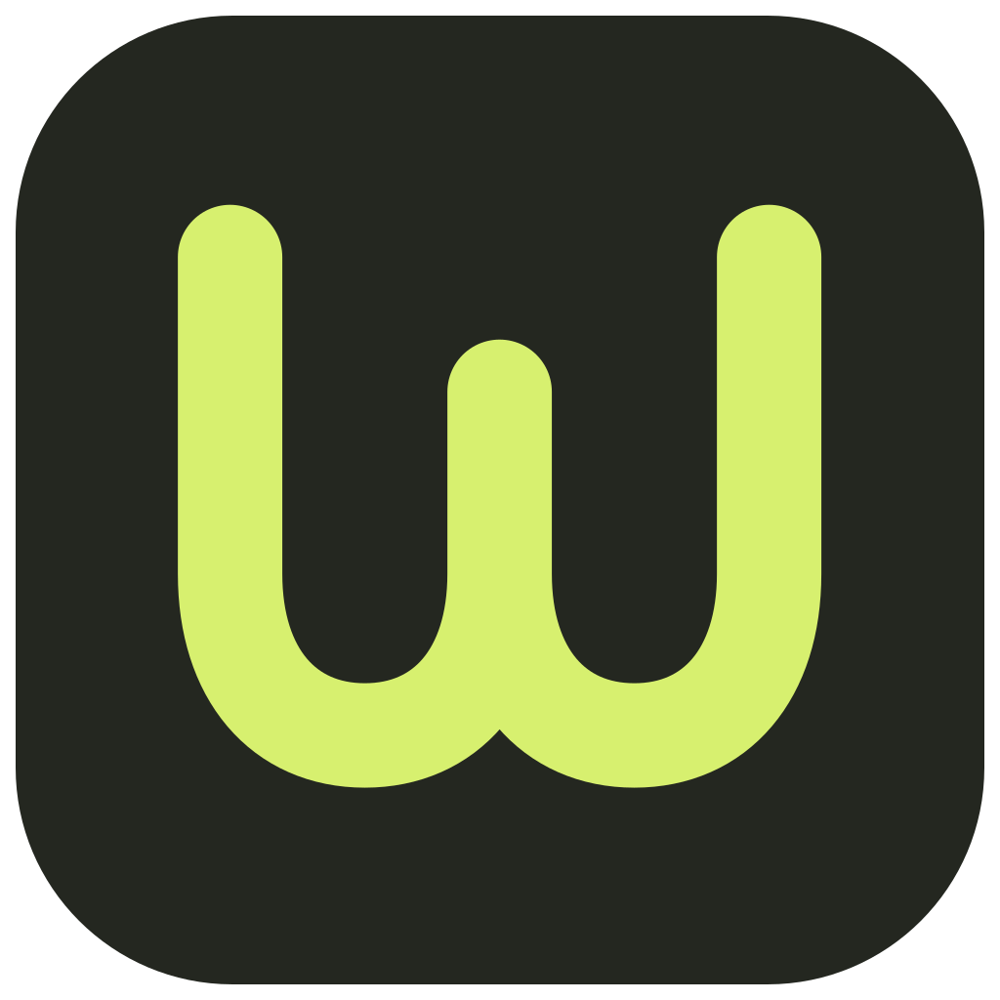

A little room for
very big possibilities.
An invention studio for people who see something that could be better—and feel the pull to make it real.

01Open by design.
A connected w. Two open paths. Room to begin.

A familiar face on your desktop.
Quiet enough to work beside. Distinct enough to find again. The same open w stays clear from the Dock to a browser tab.
02A warm place to think.
Paper and ink, with a small electric interruption.
03Imagination, with a steady hand.
Instrument Serif + DM Sans. Included for offline use.
The future needs
a first draft.
For invitations, possibility, and the occasional surprising thought. Use generous scale and ordinary sentence case.
Clear questions.
Useful evidence.
A place to begin.
For the work: navigation, notes, sources, labels, and decisions. Direct, legible, and comfortably human.
04Curiosity with conviction.
Invite ambition. Keep the next step concrete.
“What if?”
Then, “How?”
We take a creator’s ambition seriously. We ask useful questions, show our evidence, and keep possibilities open long enough to discover something worth pursuing.
- The invitationMake room for what could be.
- The starting pointWhat do you wish existed?
- The inquiryWhat would have to become true?
- The next stepFind your first proof.
05Take it somewhere.
Editable vector assets. No external images or font requests.